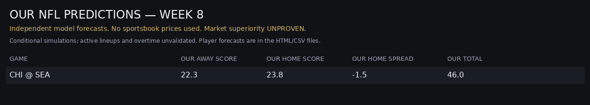

RESEARCH ONLY · NO APPROVED BETS. Scores, spreads and totals are independent conditional forecasts. Complete lineups, overtime, calibration and market superiority are unverified.
Model captured (UTC): 2026-11-04T20:24:56.678421+00:00 · Bundle created (UTC): 2026-11-04T20:25:07.780926+00:00
Upcoming matchups at publication: 15. Started games are historical forecasts, not live betting signals.
All player projectionsPlayer CSVGame CSVFull forecast JSONScore dashboard PNGArchived Week 5 market board
| Matchup | Our projected away–home | Our home spread | Our total | Kickoff UTC | Status |
|---|---|---|---|---|---|
| JAX @ BAL | 26.0 – 19.5 | +6.6 | 45.5 | 2026-11-06T01:15:00+00:00 | Upcoming |
| CIN @ ATL | 26.1 – 23.2 | +2.9 | 49.3 | 2026-11-08T14:30:00+00:00 | Upcoming |
| CLE @ NO | 21.8 – 22.0 | -0.1 | 43.8 | 2026-11-08T18:00:00+00:00 | Upcoming |
| DAL @ IND | 27.2 – 25.1 | +2.1 | 52.4 | 2026-11-08T18:00:00+00:00 | Upcoming |
| DEN @ CAR | 24.0 – 21.8 | +2.2 | 45.8 | 2026-11-08T18:00:00+00:00 | Upcoming |
| DET @ MIA | 27.2 – 21.9 | +5.3 | 49.0 | 2026-11-08T18:00:00+00:00 | Upcoming |
| LA @ WAS | 26.4 – 21.9 | +4.5 | 48.3 | 2026-11-08T18:00:00+00:00 | Upcoming |
| NYG @ PHI | 22.1 – 21.2 | +1.0 | 43.3 | 2026-11-08T18:00:00+00:00 | Upcoming |
| NYJ @ KC | 18.9 – 24.1 | -5.2 | 43.0 | 2026-11-08T18:00:00+00:00 | Upcoming |
| HOU @ LAC | 22.7 – 19.3 | +3.4 | 42.1 | 2026-11-08T21:05:00+00:00 | Upcoming |
| LV @ SF | 22.8 – 28.5 | -5.7 | 51.2 | 2026-11-08T21:05:00+00:00 | Upcoming |
| ARI @ SEA | 19.2 – 27.9 | -8.7 | 47.1 | 2026-11-08T21:25:00+00:00 | Upcoming |
| GB @ NE | 19.9 – 22.5 | -2.7 | 42.4 | 2026-11-08T21:25:00+00:00 | Upcoming |
| TB @ CHI | 22.0 – 23.0 | -1.0 | 45.1 | 2026-11-09T01:20:00+00:00 | Upcoming |
| BUF @ MIN | 23.2 – 22.7 | +0.6 | 45.9 | 2026-11-10T01:15:00+00:00 | Upcoming |
Current input checks
These checks were collected after the forecast and did not change its values. Reported injury statuses do not confirm a starting lineup. Outdoor weather forecasts do not confirm roof position.
Dated input evidence and source hashes
| Matchup | Game binding | Personnel checks | Outdoor weather | Roof | Missing or blocked |
|---|---|---|---|---|---|
| JAX @ BAL | Passed | Starters: 0/2; inactive reports: 0/2; explicit availability: 0; dated injury statuses: 2 | Verified forecast | Not applicable — outdoor venue | Confirmed starting quarterbacks, Final player availability |
| CIN @ ATL | Passed | Starters: 0/2; inactive reports: 0/2; explicit availability: 0; dated injury statuses: 2 | Unavailable | Not verified | Confirmed starting quarterbacks, Final player availability, Roof position, Weather forecast at kickoff |
| CLE @ NO | Passed | Starters: 0/2; inactive reports: 0/2; explicit availability: 0; dated injury statuses: 1 | Verified forecast | Not applicable — fixed roof | Confirmed starting quarterbacks, Final player availability |
| DAL @ IND | Passed | Starters: 0/2; inactive reports: 0/2; explicit availability: 0; dated injury statuses: 3 | Verified forecast | Not verified | Confirmed starting quarterbacks, Final player availability, Roof position |
| DEN @ CAR | Passed | Starters: 0/2; inactive reports: 0/2; explicit availability: 0; dated injury statuses: 1 | Verified forecast | Not applicable — outdoor venue | Confirmed starting quarterbacks, Final player availability |
| DET @ MIA | Passed | Starters: 0/2; inactive reports: 0/2; explicit availability: 0; dated injury statuses: 0 | Verified forecast | Not applicable — outdoor venue | Confirmed starting quarterbacks, Final player availability |
| LA @ WAS | Passed | Starters: 0/2; inactive reports: 0/2; explicit availability: 0; dated injury statuses: 4 | Verified forecast | Not applicable — outdoor venue | Confirmed starting quarterbacks, Final player availability |
| NYG @ PHI | Passed | Starters: 0/2; inactive reports: 0/2; explicit availability: 0; dated injury statuses: 4 | Unavailable | Not applicable — outdoor venue | Confirmed starting quarterbacks, Final player availability, Weather forecast at kickoff |
| NYJ @ KC | Passed | Starters: 0/2; inactive reports: 0/2; explicit availability: 0; dated injury statuses: 1 | Verified forecast | Not verified | Confirmed starting quarterbacks, Final player availability, Roof position |
| HOU @ LAC | Passed | Starters: 0/2; inactive reports: 0/2; explicit availability: 0; dated injury statuses: 2 | Verified forecast | Not applicable — fixed roof | Confirmed starting quarterbacks, Final player availability |
| LV @ SF | Blocked | Starters: 0/2; inactive reports: 0/2; explicit availability: 0; dated injury statuses: 0 | Unavailable | Not verified | Game or source verification, Game or source verification, Confirmed starting quarterbacks, Player availability, Weather and roof status |
| ARI @ SEA | Passed | Starters: 0/2; inactive reports: 0/2; explicit availability: 0; dated injury statuses: 5 | Verified forecast | Not applicable — outdoor venue | Confirmed starting quarterbacks, Final player availability |
| GB @ NE | Passed | Starters: 0/2; inactive reports: 0/2; explicit availability: 0; dated injury statuses: 4 | Verified forecast | Not applicable — outdoor venue | Confirmed starting quarterbacks, Final player availability |
| TB @ CHI | Passed | Starters: 0/2; inactive reports: 0/2; explicit availability: 0; dated injury statuses: 1 | Verified forecast | Not applicable — outdoor venue | Confirmed starting quarterbacks, Final player availability |
| BUF @ MIN | Passed | Starters: 0/2; inactive reports: 0/2; explicit availability: 0; dated injury statuses: 3 | Verified forecast | Not applicable — fixed roof | Confirmed starting quarterbacks, Final player availability |

Home spread is negative of forecast home margin, not a calibrated cover probability. No sportsbook price, positive EV or fill is asserted.